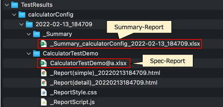
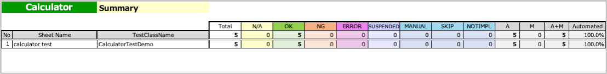

SummaryReportExecute
You can create a function to get Summary-Report.
Creating function
- Create a class named
SummaryReportExecute. - Create main function as follows.
import shirates.spec.report.models.SummaryReportExecutor
fun main() {
SummaryReportExecutor().execute()
}
Running function
- Run tests and get Spec-Report in the log directory.
- Right click
SummaryReportExecute.ktand selectrunto get Summary-Report.

Summary-Report
